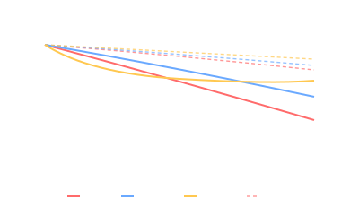

Long-Duration Spaceflight
Beyond about three months, microgravity stops being neutral and starts taking measurable bites out of the human body.

101 · zoom in
On Earth, gravity is doing background work all day: pulling fluids toward your feet, loading your bones every step, exercising your heart against the weight of your blood. Take that away and the body un-builds — bones lose ~1-2% density per month if you don't fight back, muscles atrophy, the cardiovascular system de-conditions, fluid shifts pile pressure into your skull and squish your eyeballs slightly. Two hours a day on a treadmill harness and a resistive exercise device claws most of it back, but not all.
The current single-mission record on the ISS is Frank Rubio at 371 days (Sep 2022 – Sep 2023). The all-time record was Valeri Polyakov on Mir at 437.7 days in 1994-95 — a deliberate test for a potential Mars mission. Tiangong's crews currently rotate at roughly 6-month intervals, matching the ISS standard.
Beyond bone and muscle, the harder problems are radiation (Galactic Cosmic Rays accumulate at ~0.5 mSv/day in LEO — about 100× sea level), eyesight (Spaceflight-Associated Neuro-ocular Syndrome remains poorly understood), and behavioural health (small spaces, isolation, no privacy).
BONE + MUSCLE — astronauts lose 1-2% bone mineral density per month in weight-bearing bones without countermeasures (~0.5% with the Advanced Resistive Exercise Device + bisphosphonate). Type I muscle fibres atrophy fastest; daily 2-hour exercise on treadmill + cycle ergometer + ARED preserves about 90% of pre-flight muscle mass.
CARDIOVASCULAR + FLUID SHIFT — heart shrinks by ~9.4% in volume during 6-month missions; orthostatic intolerance persists for weeks after return. About 2 L of fluid migrates from legs to head in microgravity, causing facial puffiness, raised intracranial pressure, and is implicated in Spaceflight-Associated Neuro-ocular Syndrome (SANS).
VESTIBULAR / SENSORIMOTOR — re-adaptation to gravity takes hours to days post-landing; fine motor control is measurably degraded for ~2 weeks.
RADIATION — LEO crew receive ~150-180 mSv per 6-month mission. Career limits are set per agency; NASA's effective dose-limit framework caps career risk at 3% increased cancer mortality, which translates to roughly 3-5 ISS-length missions for most astronauts.
Records: Polyakov 437.7 d (Mir, 1994-95); Rubio 371 d (ISS, 2022-23); Vande Hei 355 d (ISS, 2021-22); Kononenko cumulative >1000 d across 5 missions.